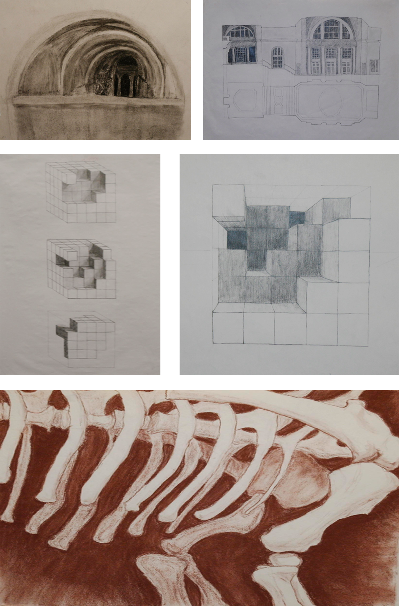

Spatial Drawings
The goal of the first semester was to understand how to create and visualize three dimensional space. The drawings below were studies of spatial subjects including The College of Fine Arts Great Hall at Carnegie Mellon Universtiy, an imaginary eroded cube, and the rib cage of a dinosaur at the Carnegie Museum of Natural History.
